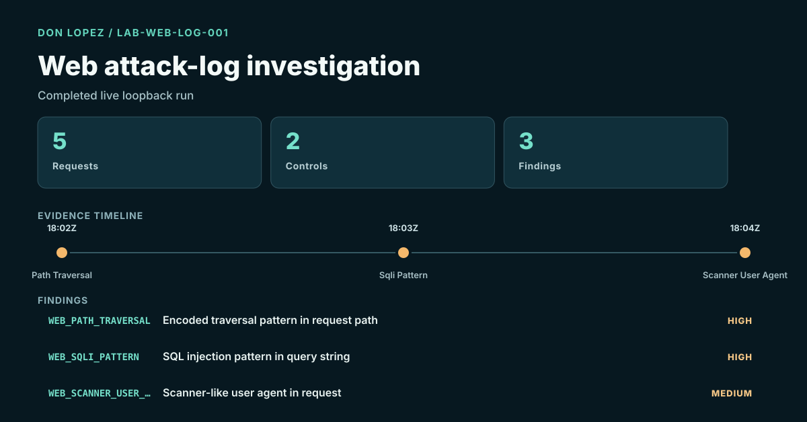
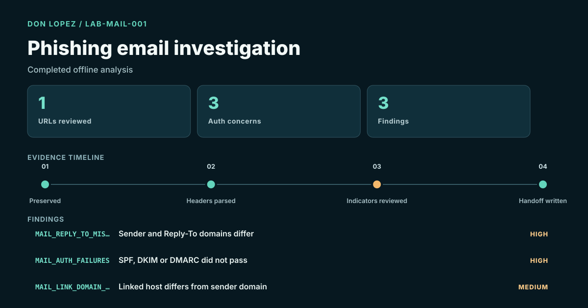
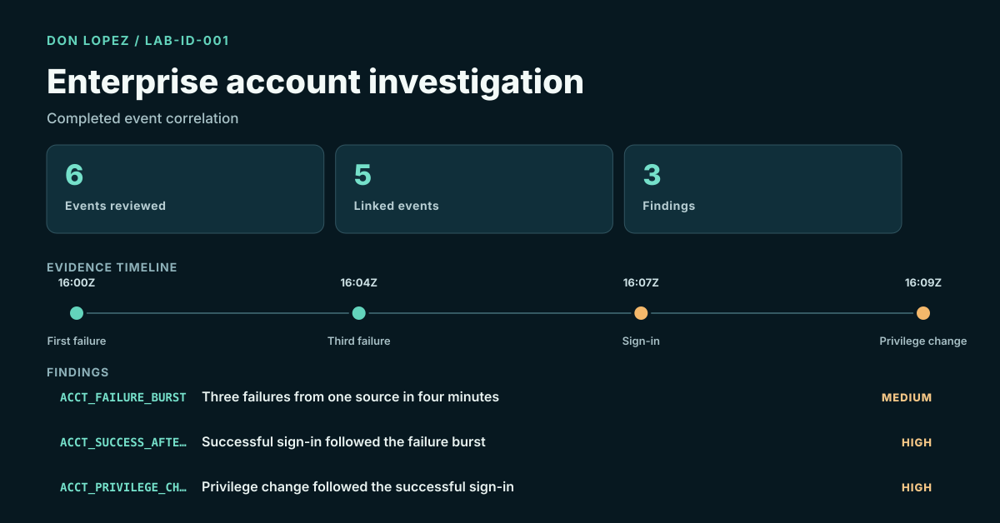

Back to portfolio
Choose what to explore.
Open an investigation, review the engineering work, or see the study software.
Security investigations Research infrastructure Learning software Planned projects
Prefer a role-based review? Choose a hiring path ↗
Security investigations
Résumé lab studies, completed reproducible cases, and prior training with their evidence clearly distinguished.
RECORDED TELEMETRY / SOURCE-LINKED ANALYSIS One account → three targets 172.18.39.5 WS6 WS7 DC TCP/5985 25,993 host events · 1,121 packets Follow distinct-account failures, RC4 service tickets and remote PowerShell across three targets. Compare execution and collection clocks, inspect exact GUID/session joins, and challenge the network corroboration.
Independent public-capture analysis · Python · Sysmon · Kerberos · PCAP
Reconstruct the chain ↗ Actual lab screenshot Inspect the corrected authentication SPL, event-window logic and linked rule controls.
Public authentication lab · Splunk SPL · Python
Read case study ↗ Actual lab screenshot Inspect saved Splunk authentication findings alongside separately analyzed AD host and packet evidence.
Public lab evidence · Splunk · Python
Read case study ↗ Attributed reference image Kali Linux simulations, Wireshark packet review and Snort detection tuning.
Résumé lab · Wireshark · Snort
Read case study ↗ Reproducible lab result Verified working-copy analysis with artifact citations and owner-confirmed Paraben E3 classroom context.
Inspect the evidence ↗ Reproducible public exercises
Investigated why a login rule missed two expected findings. Corrected results matched all five training cases.
Splunk · Python · Controlled lab
Read case study ↗
Reviewed encoded PowerShell and certutil commands, separating two review candidates from benign controls.
Windows Event 4688 · Python · Synthetic data
Read case study ↗
Traced DNS failures and HTTP activity to specific frames in a generated 20-packet capture.
Python · PCAP · Generated traffic
Read case study ↗

Reproducible lab result Sent five real loopback requests, identified three controlled attack patterns, then retained the four-to-zero hardening retest.
HTTP · Python · Access logs · Localhost
Inspect the evidence ↗ 
Reproducible lab result Checked sender identity, authentication results and link-domain differences in a lab-created message.
RFC 5322 · Header analysis · Safe URL handling
Inspect the evidence ↗ 
Reproducible lab result Correlated a failure burst, successful sign-in and privilege change while retaining alternative explanations.
Windows-style events · Identity · Timeline correlation
Inspect the evidence ↗
Research infrastructure
Public architecture summaries of private engineering projects.
Research infrastructure designed to keep experiments repeatable and the evidence behind results traceable.
Research infrastructure · Private implementation
Read case study ↗
Research tooling designed to keep source support, conflicting observations, and permission to act distinct.
Evidence handling · Private implementation
Read case study ↗
Learning software
Security+ and SC-900 study applications with adaptive practice, answer explanations, saved progress, and session resume.
Python · Windows desktop · Public source
Read case study ↗
Next investigation This brief remains planned, with no completed result claimed.
Planned project
A planned local tool for turning exported security events into a reviewable case summary.
Read the project brief ↗